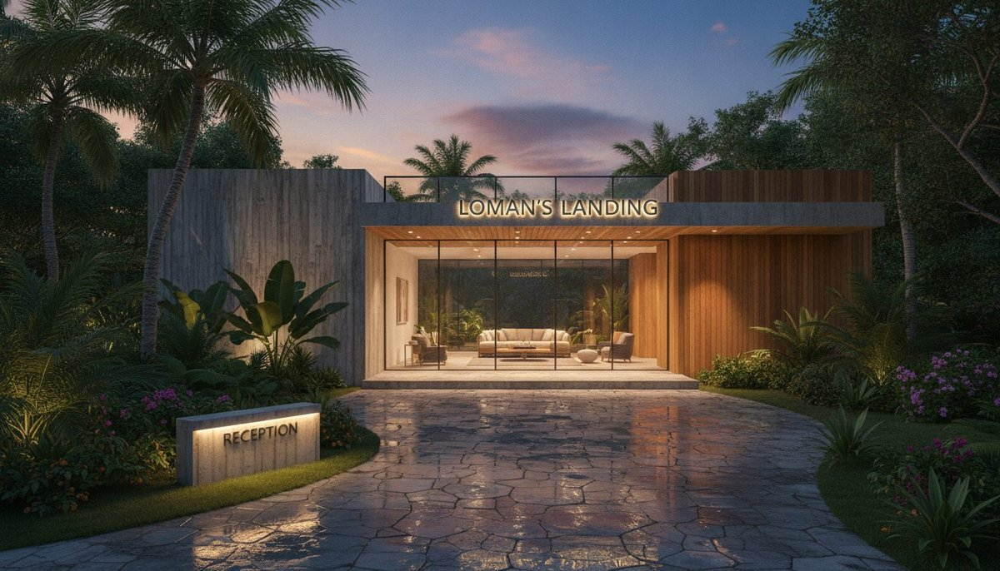

The scene is our standard punishment for image models: a resort reception at dusk called Loman's Landing, glass box between concrete and timber, wet stone forecourt, and two separate text elements that have to come out legible. Building signage up top, a low reception sign at ground level. Text is where image models go to embarrass themselves, which is exactly why it is the bench.
Both models got the same prompt, the same production pipeline configuration we run for every ArchiGen hero, and no second chances. First generation counts, five rounds each, ten images, thirty-seven cents of total spend. This is the audit for a decision we already shipped: the site's hero pipeline has been running Lite since July 14, swapped in on the strength of a single early matchup. That is the kind of decision this publication exists to check in public.
The numbers
| Metric | NB2 | NB2 Lite | Read |
|---|---|---|---|
| Median generation time | 5.41s | 2.52s | Lite, 2.15x faster |
| Cost per image | $0.0387 | $0.0342 | Lite, about 13% less |
| Legible signage, both signs | 5 of 5 | 5 of 5 | Parity |
| Exact-glyph consistency | Steadier | Occasional wobble | NB2, narrowly |
| Output format | PNG | Native JPEG | Lite skips a re-encode we do anyway |
Speed is the quiet headline. At batch scale, 2.52 seconds against 5.41 is not a rounding error, it is the difference between a twenty-article visual backfill running over lunch or over an afternoon. The cost delta is real money only in bulk, but we generate in bulk. The native JPEG output is a small mercy for a pipeline that was re-encoding PNGs to JPEG on every run regardless.
The finding that did not survive
Our earlier matchup between these two models handed Lite the win on text rendering. That result came from a single sample, and we flagged it as such at the time. At five samples per model it did not replicate. Both engines set the big sign correctly in every round; on the small reception sign, NB2 was actually the slightly steadier glyph machine, with Lite producing the occasional soft letterform under close crop.
The lesson is not about either model. It is about sample size. A one-image verdict is a coin you have not flipped yet, and half the tool rankings we audit on this site are built from exactly that coin. Five samples is still small; it is also five times more honest than most of what circulates.
Same prompt, two readings
Parity on fidelity did not mean identical pictures, and this is worth a minute if you art-direct with these tools. Handed the same words, NB2 kept planting a frontal, symmetric establishing shot, dusk sky centered over the box. Lite kept choosing an angle: three-quarter view, wet stone doing reflection work, staff and guests inside the glass, a hillside of palms behind. Neither is wrong. They are different editors reading the same brief.

If your board needs the sober elevation, NB2's instincts run that way out of the box. If it needs life, Lite leans there unprompted. Either can be steered with another sentence of prompt; unsteered, this is the temperament you get.
Our take
The July 14 swap stands. Lite keeps the hero pipeline on speed, cost, and format, with fidelity parity where it counts. The one rule we are adding: any hero carrying critical exact text gets a verify pass, and NB2 is the retry engine when a letterform wobbles. The fast model does the volume, the steady model backstops the type.
Every image in this article is a raw bench output, compressed for the web and otherwise untouched. The pipeline that generated them is the same one that illustrates this site. The engine benched itself, in public, for thirty-seven cents. It passed.
Benched 25 Jul 2026 by Vista Studios: 5 paired first-generations per model, identical prompt and production pipeline config, one signage-heavy scene, total spend $0.37. Timings are medians. Raw outputs unretouched apart from resize and compression. Prior single-sample text finding superseded by this result. No vendor relationship with Google or any tool named.